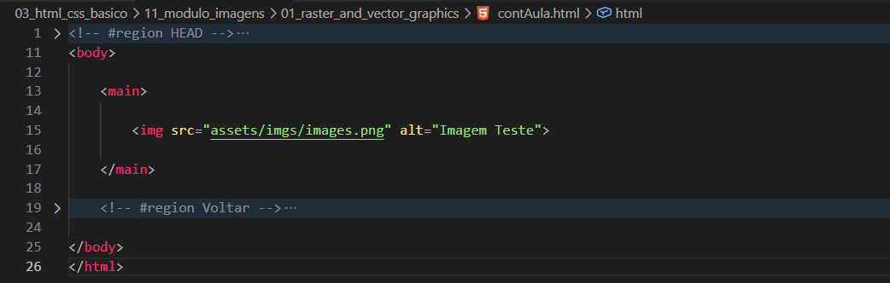

Raster and Vector Graphics
Intro
Aqui iremos aprender sobre tipos de imagens e entender a diferenca entre imagens raster e vector.
Aqui iremos aprender sobre tipos de imagens e entender a diferenca entre imagens raster e vector.
HTML:

Podemos observar que temos uma tag img contendo uma imagem do tipo .png.
Uma imagem do tipo png pertence ao grupo de imagens raster, sendo formada por pixels.
Ao aproximarmos a imagem utilizando zoom, podemos perceber uma aparencia pontilhada, causada pelos pixels que compoem a imagem.
Ao dar zoom em uma imagem do tipo svg, podemos observar que nao existe o mesmo efeito pontilhado dos pixels.
Isso acontece porque imagens svg utilizam vetores e formas matematicas para manter a qualidade da imagem em diferentes tamanhos.
Quando trabalhamos com svg, a imagem consegue se adaptar melhor ao tamanho utilizado em nosso site, mantendo linhas mais suaves e definidas.
Ja imagens do tipo raster, como png e jpg, sao mais utilizadas para fotografias, pois conseguem armazenar muitos detalhes e cores.
Em casos como icones, diagramas, logos e ilustracoes simples, normalmente utilizamos svg, pois ele se adapta melhor a diferentes resolucoes.
Conteudo da aula